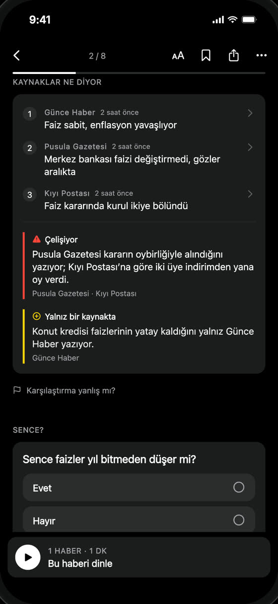

Kaynak karşılaştırma
Aynı haberi kaynaklarına göre karşılaştır
Bir olay, birkaç yayın, farklı anlatımlar. Wonderwhy onları yan yana koyar ve nerede ayrıştıklarını gösterir; beş sekme açmana gerek kalmaz.


Her haberde ne görürsün
Çelişiyor
Yayınlar arasında uyuşmayan sayı, tarih ya da iddia.
Farklı vurgu
Aynı olgu, belirgin biçimde farklı anlatılmış.
Yalnız bir kaynakta
Önemli bir ayrıntıyı yalnız bir yayın veriyor.
Yakın anlatıyorlar
Yayınlar haberi birbirine yakın anlatıyor.
Etiket bulunan en ağır farkı söyler; bir puan değildir.
Nasıl çalışır?
- 1
Aynı olay bir arada
Aynı olayı veren farklı yayınlar, baskında tek haberde toplanır: Türkiye, ABD ya da Dünya.
- 2
Yapay zekâ karşılaştırır
Yapay zekâ haberleri yan yana okur ve farkları ayırır. Her kaynağın başlığını ve ayrıştıkları noktaları görürsün.
- 3
Aslını oku
Bir kaynağa dokunup haberin aslını oku. Karşılaştırma sence yanlışsa haberden bildir.
Bir örnek
Uygulama ekranındaki gibi kurgusal yayınlarla.
Merkez bankası faizi sabit tuttu
Günce Haber
Faiz sabit, enflasyon yavaşlıyor
Pusula Gazetesi
Merkez bankası faizi değiştirmedi, gözler aralıkta
Kıyı Postası
Faiz kararında kurul ikiye bölündü
Çelişiyor
Pusula Gazetesi kararın oybirliğiyle alındığını yazıyor; Kıyı Postası’na göre iki üye indirimden yana oy verdi.
Yalnız bir kaynakta
Konut kredisi faizlerinin yatay kaldığını yalnız Günce Haber yazıyor.
Ne yapmaz
- Kimin haklı olduğuna karar vermez. Haberlerin nerede ayrıştığını gösterir; karar senin.
- Yayınlara ya da taraflılıklarına puan vermez.
- Bir farkı kaçırabilir. “Yakın anlatıyorlar” kesin uyum demek değildir.
Sorular
Taraflılık ölçer mi?
Hayır. Wonderwhy yayınlara puan vermez, onları sağ ya da sol diye etiketlemez. Aynı haberin anlatımlarının nerede ayrıştığını karşılaştırır: olgular, vurgu ve ayrıntılar.
Hangi yayınları karşılaştırıyor?
Baskının haber akışlarındaki yayınları: Türk, ABD’li ve uluslararası yayınlar. Her kaynağın adı yazar ve haberin aslına bağlanır.
Haberi dinleyebilir miyim?
Evet. Her haber kısa sesli bülteninin parçası. Mikrofona basılı tutup sorarsın, cevap aynı sesle gelir.
Kaynakların nerede ayrıştığını gör
Wonderwhy App Store ve Google Play’de.